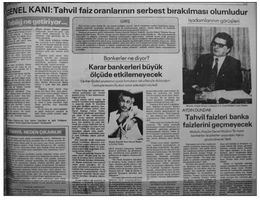
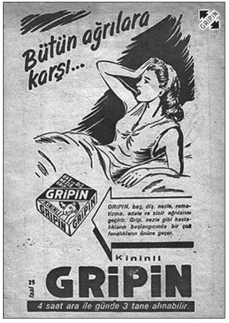
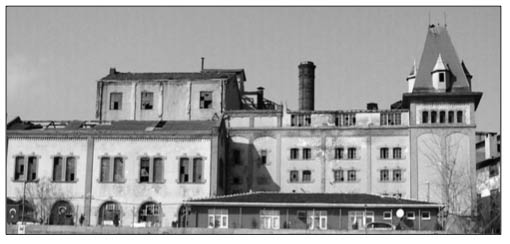

B
Babalar Gibi Satarım (AKP’li Maliye Bakanı Kemal Unakıtan’ın meşhur sözü): Bu “satma” konusu bizim siyasilerde bir hastalık konusu hâline gelmiştir. Mutlaka elde ne varsa satmak bir meziyetmiş gibi değerlendirilmektedir. Maliye Bakanı Kemal Unakıtan, AKP hükû-metlerinin en renkli simalarından biriydi. Unakıtan, yaptığı açıklamalardaki farklı üslubu ve konuşmasıyla daima gündemi belirleyen bir isim olmuştu. Muhalefetin istifaya çağırdığı Unakıtan, kaçak villa, oğlunun mısır ithalatı, Ga-lataport, Tüpraş’taki hisse satışı gibi birçok tartışmalı konunun odağında yer aldı. Başbakan Erdoğan, ondan “Kemal Ağabey” diye söz ediyordu. Unakıtan, “Babalar gibi satarım” sözünü siyasi literatüre kazandıran kişiydi. Petkim özelleştirmesine ilişkin olarak Unakıtan’ın söylediği bu cümle, daha sonra Tekel’in satışı için de sarf edildi. Maliye Bakanı, özelleştirmede izlenen politikayı ise “Satışa çıkıyoruz, parayı veren düdüğü çalar”, “Kârlı, kârsız ne varsa satacağız” sözleriyle açıklıyordu. 2006 bütçe görüşmelerinde muhalefetin gündeminde yine Unakıtan vardı. Bütçe görüşmelerinde CHP Genel Başkanı Baykal, Unakı-tan’ı kürsüden istifaya davet etti. Görüşmeler sırasında CHP’li vekiller, Maliye Bakanı’na Unakıtan soyadlı kişilerin kurduğu şirketleri sordu. Bakan Unakıtan ise kendisine has üslubuyla cevap verdi: “Ne yiyecek bu çocuklar. Devlete girip de ihale mi almışlar? Adama, ‘Soyadımı taşıma’ mı diyeceğim? Soyadını mı değiştirecek, babası Maliye Bakanı oldu diye?”. Son olarak “kaçak villa” tartışmasıyla gündeme gelen Unakıtan, bu konuda “Çocuklarım rahat etsin diye imar iznini bekliyorum” diyordu. Maliye Bakanı’nın, villa tartışmasıyla ilgili son yorumu “Kemal Ağabey’le bu kadar uğraşmayın” oldu.
Back to Back: (Bkz. Bankaların İçini Boşaltmak).
Bankaların İçini Boşaltmak (Türklerin önüne geçemediği bir hastalık türü): Bankaların içini boşaltma alışkanlığı bilinmesine rağmen, devletin neden gerekli önlemleri almadığı konusu gerçekten çok enteresandır. Gelelim konunun ayrıntılarına. 1997’den itibaren bankacılık sektörü, ekonominin en sağlıksız ve en kırılgan sektörü hâline gelmişti. Beklenen oldu ve son bankalar operasyonu için 1999’un son günlerinde düğmeye basıldı. Süreç, Egebank, Yurtbank, Esbank, Sümerbank ve Yaşarbank’ın Tasarruf Mevduatı Sigorta Fonu (TMSF)’na devredilmesiyle başladı. Eylül 2000’de ise, “İkinci Yeğen Vakası”nın baş aktörü Yahya Murat Demirel, Egebank’ın 1 milyar 300 milyon dolarını hileli yollarla kendi hesabına aktarmak suçuyla tutuklandı. Kamuoyunda bu operasyonunun asıl amacının “Ekim ayında siyasete dönüyorum” diyen 9. Cumhurbaşkanı Süleyman Demirel’in önünü kesmek olduğu yönünde genel bir kanaat oluştu. Egebank’la başlayan operasyon zinciri hızla yayıldı. Sümerbank ve Yurt-bank’ın eski sahipleri Hayyam Garipoğlu ve Ali Balkaner de tutuklandı. Her gözaltı ve operasyon yeni bir sansasyona yol açıyor ve Türkiye’nin “ünlüleri” birer birer cezaevine konuluyordu. BDDK Başkanı Zekeriya Temizel’in, “Başka batık banka yok” açıklamasından kısa bir süre sonra Sabah gazetesi ve ATV’nin sahibi olan Dinç Bilgin’e ait Etibank ile Ceylan Grubu’nun elinde tuttuğu Bank Kapital’in yönetimine el konuldu.
Bankaların içi çok çeşitli yol ve yöntemlerle boşaltılmıştı. Türkler, bu konuda yine alkışlanacak çeşitli yaratıcılık yöntemlerine imza atmıştı. En sık başvurulan yöntemlerin başında, “Back to Back” geliyordu. “Sen bana ver, ben de sana vereyim” biçiminde özetlenen yöntem şöyle işliyordu: Kendi şirketlerine sınırlı miktarda kredi verebilen banka sahipleri, bir başka bankadan kredi alıyor, buna karşılık kendi bankasından, aynı miktarda krediyi diğer banka sahibinin şirketlerine veriyordu. Böylece yasak deliniyor, iki taraf da istediği paraya kavuşmuş oluyordu. Hor-tumcular ise, Egebank’ta olduğu gibi hayali şirketlere verdikleri krediyi daha sonra özel hesaplara aktarıyordu. Operasyonlar gösterdi ki o dönem Türkiye’de “Back to Back” yöntemini uygulamayan banka ya da grup neredeyse yok gibiydi.
İçleri boşaltılan bankaların devlete getirdiği yük, özelleştirmeler dolayısıyla elde edilen gelirin çok üzerindeydi. Bu arada devletin el koyduğu bankaların zararı önce devletin, sonra da yeni vergiler yoluyla vatandaşın sırtına yüklendi. Bankaların içini boşaltan ve topluma ciddi yük bindiren işadamları ise kısa bir süre sonra serbest kaldı. Çete davalarının DGM kapsamından çıkarılarak ağır ceza mahkemelerine verilmesiyle, banka sahipleri ve yöneticilerinin tamamı ilk duruşmalarında serbest bırakıldı. Batık bankalar operasyonunun simgesi hâline gelen Yahya Murat Demirel’in tahliye edilmesiyle batık bankalar operasyonu tamamlanırken, devlete ciddi bir fatura kaldı. 2008’de iki BDDK görevlisi, krizler sonrası TMSF’ye devredilen 24 batık bankanın net maliyetini çıkardı. Bu hesaplamalara göre, 1994-2003 yılları arasında TMSF’ye devredilen bankaların tasfiye süreci, faizleriyle birlikte Hazi-ne’nin tam 91.4 milyar dolarını yuttu (Cumhuriyet, 06.06.2008). Sizce daha fazla söze gerek var mı?
Banker Faciası (1980’lerde göz göre göre yaşanan bir skandal): Türkiye’nin skandallar ülkesi olduğunu söylemenin pek bir yararı yoktur. Fakat yine de “Bankerler Faciası” dediğimiz konu, sonuçları itibariyle skandalların içinde en önemlilerinden biridir. Skandalı hazırlayan gelişmelerin başlangıcı, 1970’li yılların sonunda enflasyon hızının iyice yükselmesine denk düşer. Bu dönem ülkede, Banker Kastelli ve Meban gibi büyük banker kuruluşlarının yanı sıra birçok köşebaşı banker kuruluşu bulunuyordu. Aslında ekonomik alanda denetimsizliğin yol açtığı facianın gerçekleşmesi için her şey hazırdı. Bankerlerin devlet radyo ve televizyonlarında hiçbir kısıtlama olmadan reklam yapabilmeleri, vatandaşın çekingenliğini ortadan kaldıran bir unsurdu. 1980 sonrası faizlerin serbest bırakılmasıyla bankalarla bankerler arasında faiz oranları konusunda başlayan anlaşmazlıklar ilk olarak 1981’in ortalarında gündeme geldi. Bankalar faiz oranları konusunda bir karar alamazken, banker kuruluşları faizlerin serbest bırakılmasını istiyorlardı. Hatta bazı bankerler, “Mademki liberal ekonomi uygulanıyor, o zaman faiz oranlarına neden karışılıyor?” şeklinde faiz oranlarının tespitine karşı çıkıyorlardı. Çok geçmeden MGK, duruma el koydu. Milli Güvenlik Konseyi, bankerlerin faiz uygulamasını Maliye Bakanlığı’nın denetimine aldı. Böylelikle, bankerlerin reklam ve ilanları Merkez Bankası’nın iznine tabi olarak yayımlanacak ve bu suretle faiz anarşisine de son verilmiş olacaktı. Fakat durum hiç de öyle olmadı. Ardı ardına iflas haberleri gelmeye başladı. 1981’in son günlerinde Banker Servet’in intihar haberini Banker Orhan ve Banker Müj-de’nin kaçtığı haberleri izledi. Aldatıldıklarını gören alacaklılar, Banker Yalçın’ın bürosunu ateşe verdi. Bu arada Banker Kastelli adıyla tanınan Abidin Cevher Özden, “Banker Krizi”nin baş aktörüydü. En sağlam gözüken banker olarak Kastelli’nin yurt dışına kaçışı ise toplumda tam bir infial yarattı. Haziran 1982’de kendisini “Paranın Lüks Nermini”, “Ben Türk sermaye piyasasının ordinaryüsüyüm” sözleriyle tanımlayan ve halktan en fazla para toplayan Kastelli hakkında tutuklama emri çıkarılırken, şirketlerinin tasfiyesi için harekete geçildi. Yurtdışına kaçan Kastelli daha sonra Türkiye’ye getirilerek yargılanmaya başladı. 1980 sonrası, finans kesiminde serbest rekabet ve yüksek reel faizlere ek olarak bu kontrolsüz ortamda yaşanan banker iflasları çok sayıda orta sınıf mensubu vatandaşın servetinin yok olmasına neden oldu. Resmî verilere göre 149 bin vatandaşın 1983 rakamlarına göre, bankerlerden 54 milyar liralık alacağı bulunuyordu. Yapılan tahminlere göre de, bankerlerin nakitleriyle birlikte malvarlıklarının toplamı ancak 37 milyar lirayı buluyordu. Aradaki farkın ise ne olacağı bilinmiyordu. Banker krizinin siyasal sonuçları da oldu. Devlet Bakanı ve Başbakan Yardımcısı Turgut Özal ile Maliye Bakanı Kaya Erdem görevlerinden ayrılmak zorunda kaldı.
Aslında bankerler krizinde en büyük hata hükümetindi. Ne olduğu ve ne olacağı belli olmayan kişilerin vatandaştan bir banka gibi para toplamasına izin verilmiş, îzo-cam reklamındaki gibi, “Yöneticimiz uyuyor mu?” sözünü doğrularcasına halkın soyulmasına seyirci kalınmıştı. Özal, “Tercih tasarruf sahibinin... Yüksek gelir, az güvence iste yen, parasını bankere yatırsın” ifadeleriyle vatandaşı bankerlere yönlendirirken, Maliye Bakanı Kaya Erdem ise ancak 1981’de bankerlere sınırlama getiren düzenlemeden sonra demeç vermiş ve “Halk kumar oynamıştır” şeklindeki açıklamasıyla bankerlerin batış sürecini hızlandırmıştı.

Bankerler Skandalı’nda ne olduğu ve ne olacağı belli olmayan kişilerin vatandaştan bir banka gibi para toplamasına izin verilmiş,
îzo-cam reklamındaki gibi, “Yöneticimiz uyuyor mu?” sözünü doğrularcasına halkın soyulmasına seyirci kalınmıştı.
Banker Yeşuva Olayı (İstanbul’un işgali döneminde uygulanan kambiyo spekülasyonunun baş aktörü): Bankerler Skandalı’nın bir benzeri İttihat ve Terakki döneminde yaşandı. Para ve tahvil üzerindeki oyunlarla büyük miktarda para kazanıldığını geç de olsa fark eden İttihat ve Terakki hükümeti, 1917’de Galata’da bir binayı kiralayarak borsa hâline getirdi, fakat parti yönetimindeki bu borsa, birçok yolsuzluğa da zemin hazırladı. 1918’den itibaren savaşı kaybeden Osmanlı’nın başkenti İstanbul’a göz diken Yunanlılar, Wilson İlkeleri’nin uygulanacağı koşulları masa başında oluşturmak istiyorlardı. Bu nedenle Osmanlı parasının değerini düşürmek ve kendi paraları drahmiyi güçlendirmek için Galata Borsası’na el attılar. Amaçları İstanbullu Rumlara kredi açarak İstanbul’un tapularını ele geçirmekti. Çünkü Wilson İlkeleri’ne göre, bir kentte tapulu arazi, bina vb. konularda üstünlük sağlayan milletler barış görüşmeleri sırasında İstanbul hakkında avantajlı bir konumda olacaklardı. Yunanlıların propagandası sonucu (aşağıda anlatılan şekilde), mülklerini satan İstanbullu Türklerin büyük bir kısmı Anadolu’ya göç ederken bazıları da Avrupa’ya gitmeyi tercih etti.
Savaştaki yenilginin sonrasında geçim sıkıntısı çeken insanlar, yaşamlarını sürdürebilmek için evlerini satma çaresizliğine düşmüştü. Dönemin Akşam gazetesi, Türklerin İstanbul’u terk etmemeleri ve mülklerini satmamaları için kampanya başlattı. Ancak hiçbir banka Türklere kredi açmıyor; tüccar ve esnaf bankalara, yabancılara ve azınlıklara olan borçları nedeniyle icraya veriliyor, malları haraç-mezat satılıyordu. Drahminin Osmanlı lirası karşısında devamlı değer kazanmasını sağlayan kambiyo spekülasyonu, Atina Bankası tarafından İstanbul’daki Rumlara kredi olarak akıtılan paranın devamlı artmasını sağlıyor ve Rumlar da kentin tapusunu yavaş yavaş ele geçiriyordu. Atina Bankası’nın yönettiği bu operasyonun Türkiye ayağında ise yabancı bankaların da desteğini alan meşhur Yahudi Banker Yeşuva vardı. Galata Borsası içinde Kambiyo Kulübü adı verilen yerde faaliyet gösteren Yeşuva, kambiyo spekülasyonu yaparak, Türk parasını devamlı düşürmek için bazı Türk gazetelerinin yanlış haber ve yoruma yer vermelerini sağlayacak bir rüşvet mekanizması kurdu. İngiliz sterlini devamlı yükseliyor ve ona bağlı olarak drahmi de değer kazanıyordu. Kambiyo spekülasyonu, Osmanlı parasıyla birlikte tahvillerinin de düşmesine neden oldu. Bu durum Ankara’daki millî hükümet İstanbul’un kaderine hâkim olana kadar sürdü. Cumhuriyet’le birlikte Kambiyo Kulübü kapatıldı ve Türk parası ve yabancı paralar üzerinden yapılan her türlü spekülasyon yasaklandı.
Barajlar Kralı (Süleyman Demirel’e verilen takma adlardan biri): Bazı benzetmeler yapmayı çok severiz. Ecevit’e “Karaoğlan” diyen halkımız, Demirel’e de “Baba” lakabını layık görmüştür. 9. Cumhurbaşkanı ve eski Başbakan Süleyman Demirel, DP’nin ülkeyi barajlarla donatma savaşı verdiği 1950’lerin sonlarında Menderes’in çok önemsediği Devlet Su İşleri Müdürlüğü’nü yapmış genç bir mühendisti. Bu niteliği ile daha sonraki dönemlerde Bayar kendisini “Bizim su müdürü” diye anıyordu.
Hürriyet gazetesinin eski genel yayın yönetmenlerinden Necati Zincirkıran, Olaylar, Anılar ve Gerçekler kitabında, genç bir Devlet Su İşleri Müdürü olan Demirel’e verilen “Barajlar Kralı” sıfatının kendisine ait olduğunu iddia eder. Demirel, Adalet Partisi (AP) Genel Başkanı Ragıp Gümüşpala’nın ölümünden sonra genel başkanlığa aday olacak ve Hürriyet gazetesi, Sadettin Bilgiç ile Tekin Arıbu-run’a karşı Demirel’i destekleyecektir. Bu destekte hiç kuşkusuz, Hürriyetin o dönemdeki sahibi Haldun Simavi’nin, Necati Zincirkıran’dan duyduğu “Barajlar Kralı” sıfatını sevmesinin de büyük etkisi vardır. Zincirkıran, Süleyman Demirel’in nasıl genel başkan seçildiğini şu sözlerle anlatıyor:
“AP’nin başına mutlaka ‘Barajlar Kralı’ Süleyman De-mirel geçmeliydi. Bu deyim Haldun Simavi’nin hoşuna gitti. Destek, Demirel’in hakkıydı. Ankara temsilcimiz Cüneyt Arcayürek’i aradım. ‘AP’de lider seçilecek. Bilgiç var ortada. Teşkilata hâkim, politikayı biliyor, ama tipi bile 1960’ların Türkiyesi’nin politikacı tipi değil. Üstelik bazı mahzurlar da var. Diğer aday olan Tekin Arıburun bu işi kıvıramaz. Ortada Adnan Menderes’in Su Müdürü Süleyman Demirel var. En uygunu o. Bu adam Türkiye’de yapılan tüm hidroelektrik santrallere, barajlara imzasını atmış. Enerji sorunumuzu biliyor. Ekonomi nosyonu var. Adam Barajlar Kralı sanki. Git onunla konuş’ dedim.”
Hürriyet’in desteğiyle Süleyman Demirel 1964’te AP Genel Başkanı seçilerek ve daha sonra “Baba” sıfatını da alarak bugünlere kadar geldi.
Batık Bankalar Olayı (1960’lı yıllarda bankaların içinin boşaltılmasının genel adı): Her ne kadar 1990’lı yılların sonunda ekonomi literatürümüze girmiş olsa da, “Batık Bankalar” ile ilk kez 1960’lı yıllarda tanıştık. 1950’li yılların Türkiyesi’nde banka kurmak en çok rağbet gören alanlardan biriydi. 1950’de 34 olan banka sayısı, 1959’da 58’e ve banka şubeleri sayısı da 535’ten 1.710’a çıkmıştı. Ancak artan rekabet, bankaları mevduat toplama yarışına yöneltti. Her köşe başında açılan pahalı lüks şubeler, dağıtılan ikramiyeler ve mevduata el altından ödenen yüksek faizler, bankaları büyük külfetlerin altına soktu. Öte yandan, bazı banka sahipleri de halkın parasını kendi işlerinde kullanıyordu. Uygulanan yöntemlerden biri kurulan paravan şirketlere kredi vermek, daha sonra da bu şirketleri iflas ettirmekti. Bir diğer yöntem de toplanan kısa vadeli mevduatın, banka sahiplerinin uzun vadeli yatırımlarına aktarılmasıydı. Bu durum 1960’a kadar devam etti. Kötü yönetim ya da yolsuzluklar nedeniyle art arda banka tasfiyeleri başladı. Sanayi Bankası, Esnaf Kredi Bankası, Doğubank ve Türkiye Birleşik Tasarruf ve Kredi Bankası 1960’ta; Tutum Bankası ve Raybank 1963’te; Türkiye Kredi Bankası ise 1964’te tasfiye edildi. Kurucuları arasında Şakir Kesebir, Mithat Nemli, Hayri İpar ve Halil Ali Bezmen’in yer aldığı Türkiye Kredi Bankası’nın, başta porselen sanayii olmak üzere, kurucularının faaliyet gösterdiği sektörlerdeki şirketlere kullandırdığı 53 milyon lira kredi geri dönmedi. Türkiye Kredi Bankası, Hazine parasını kendisine yatırdığı için iş hayatına atılan İstanbul defterdarına da büyük krediler açmıştı. Banka batınca defterdar intihar etmişti. Tutum Bankası, esas itibariyle Amaç Ticaret Şirketi’ne açtığı ölçüsüz krediler yüzünden tasfiye olmuştu. Ufak bir banka iken sermayesi 1956’da 3 milyon liradan 10 milyon liraya çıkarılmıştı. Bu 7 milyon lirayı Emlak ve Kredi Bankası ile Emekli Sandığı ödemişti. Tutum Bankası, 26 milyon lira batık kredi açmıştır ki bu aktifinin yüzde 67’sini aşıyordu. Bu durumda sermaye elden çıktığı için 25 milyon lira zarar doğmuştu. Tasfiye edilen Raybank ile ilgili ise 161 yolsuzluk belgesi bulunuyordu.
Halktan topladıkları mevduatı ödeyemeyecek duruma gelen bankaların tasfiyesi için bir fon kuruldu. Bankalar, mevduat toplamının binde yarımı oranındaki bir parayı bu fona yatırmakla yükümlü tutuldu. Ne var ki bu fonda beş yılda ancak 25 milyon lira birikmişti. Oysa 1967 Ey-lül’ünün sonuna kadar mevduat sahiplerine 256 milyon lira ödeme yapılmıştı ve tasfiye edilen banka zararlarının 500 milyon lirayı (55 milyon doları) bulacağı hesaplanmaktaydı. Sonuç olarak, halktan toplanan mevduatın şüpheli kredilere yatırılmasından doğan zarar Merkez Bankası tarafından ödendi. Vatandaş ise parasını alabilmek için uzun süre beklemek zorunda kaldı. Tasfiye edilen bankaların ülkeye getirdiği 500 milyon liralık mali yükün boyutlarının daha iyi anlaşılması için bu rakamın Boğaz Köprü-sü’nün inşa maliyetiyle kıyaslanması yerinde olacaktır. 1968’de Boğaz Köprüsü bir İngiliz şirketine ihale edilmişti. Uzunluğu 22 kilometreyi bulacak çevre yolu, kavşak ve köprülerle birlikte projenin toplam maliyetinin 1 milyar 250 milyon lira olacağı açıklanmıştı.
Ben Divan-ı Âli’den de, Ötesinden de Korkmam: (Bkz. Demirel Üslubu).
Ben Ülkemi Âdeta Pazarlamakla Mükellefim: (Bkz. Erdoğan Üslubu).
Besleme Basın (Türk basınının bağımsızlığını ortadan kaldıran bir etken, basının gücünün çıkar ve menfaat karşılığı kullanılmasının genel adı): “Basının beslemesi de olur mu?” demeyin, olur. Resmî ilan vermenin amacı, belirli bir konuyu halk arasında en geniş şekilde yaymaktır. Ancak resmî ilan verilmesi, CHP’nin tek parti döneminde başlattığı bir uygulama olarak zamanla partizan bir tutum içerisinde suistimallere açık bir hâle geldi. Ankara’da yayımlandığından bile kimsenin haberdar olmadığı bir gazeteye ödenen parayla, yıllardan beri İstanbul’da yayımlanıp yurdun her köşesine dağıtılan gazetelere ödenen para arasında neredeyse hiç fark yoktu. Resmî ilan yolsuzluğu yıllar yılı sürdü, iktidara gelen her parti kendi yanında gördüğü gazete sahiplerini devlet kesesinden zengin etti. Bu durum Falih Rıfkı Atay’ın “Besleme Basın” adını verdiği gazetelerin türemesine ve meslekle uzaktan yakından ilgisi bulunmayan kimselerin zengin olmasına neden oldu.
Demokrat Parti de iktidara geldikten sonra, gazetelere resmî ilan dağıtımında CHP’nin izlediği hatalı yolu devam ettirdi. CHP iktidarı döneminde, resmî ilanların bir kopyasının Ulus gazetesinde yayımlanmasını zorunlu kılarak, gazeteye maddi kaynak sağlama yöntemi aynı şekilde DP’lilerce bu sefer Zafer gazetesinde uygulandı. Ancak işin enteresan tarafı, DP muhalefet yıllarında, bu konuyu şiddetli bir dille eleştirmiş ve “Bu meşru olmayan kazançların bir gün hesabını soracağız” iddiasında bulunmuştu. DP iktidara geldikten sonra konuyla ilgili ilk düzenlemeyi 1950’de yaptı. O tarihe kadar bu alanda çalışan Türk Basın Birliği ve Ortakları Resmî İlanlar Kolektif Şirketi etkisiz kılınmadı, ancak bazı sınırlamalar getirildi. Daha sonraki yıllarda yapılan düzenlemelerle de resmî ilanların dağıtımında tek yetkili merci hükümet oldu.
CHP’li milletvekilleri konuyu, Ocak 1951’de yapılan Bütçe Komisyonu toplantısına taşıdı. Başbakan yardımcısı Samet Ağaoğlu, resmî ilanlar hakkındaki kararnameyi söz konusu ederek ilanların gazetelere eşit şekilde dağıtıldığını ileri sürdü. Ağaoğlu, 2 Ekim 1950’den 31 Aralık 1950’ye kadar resmî ilan karşılığı olarak Ankara’da yayımlanan gazetelerden Ulus’a 66 bin 638, Zafer’e 109 bin 350, Kudret’e 36 bin 681 ve Haber’e de 33 bin 833 lira verildiğini açıkladı. Bu ödemeler gazetelere üç ay gibi kısa bir sürede yapılmıştı. Aynı dönemde bu gazetelere ödenen parayla İstanbul’da yayımlanan gazetelere ödenen resmî ilan parası arasında ciddi farklar bulunuyordu.
Rakamlardan anlaşılacağı üzere, İstanbul’un en büyük gazetelerinin aldığı üç aylık resmî ilan tutarı Zafer gazetesinin aldığı paranın neredeyse onda biri oranındaydı. Sa-med Ağaoğlu hem bu rakamları vermiş, hem de ilan paralarının “eşit” dağıtıldığını iddia etmişti. 30 Mayıs 1952’de muhalefetin, resmî ilanların keyfi dağıtılmasına ilişkin Meclis Araştırması istemi reddedildi. 1956’da Devlet Bakanı Emin Kalafat’ın açıklamasına göre de, son bir buçuk yıl içinde Ankara’da yayımlanan ve DP’nin yayın organı olan Zafer gazetesine verilen resmî ilan bedeli 1 milyon 48 bin 310 liraydı. Bu gazetenin sermayesinin yüzde sekseni DP’ye aitti. Buna göre DP, her yıl 800-900 bin lirayı bu yoldan devlet hazinesinden alarak partinin giderlerini karşılamaktaydı. Bu işleyişe son verildiğinde DP’nin büyük bir gelir kaynağından yoksun kalacağı çok açıktı. Bir zamanlar 15-20 milyon lira civarında olan resmî ilan giderleri, daha sonraları artırılacaktı. Türk basınının “doymak bilmez ejder”i bu şekilde ortaya çıkıyor, siyasal iktidarlar da bu ejderi bizzat yaratıyordu.
Bıyıklı Yabancı (Türkleri bazı avantajlardan faydalanmak için yabancıymış gibi gösterme hâli): “Bıyıklı yabancı” terimi, 1999’un başından itibaren ortaya çıkan bir kavramdır. Bu tarihte yapılan yasal düzenlemeyle yurtiçindeki yatırımcıya borsa vergisi getirilmişti. Yine aynı düzenlemeye göre, yabancı yatırımcılara vergi istisnası tanınmıştı. Durum böyle olunca, genellikle vergi ödemek istemeyenler, kendisini yabancı yatırımcıymış gibi göstermek üzere yurtdışındaki vergi cennetlerinde yatırım fonları kurarak borsada vergisiz hisse senedi alım satımı yapmaya başladılar. Böylelikle Türkiye’de oturan ve yurtdışı aracı kurumlarını kullanarak Türk borsasında oynayan Türklerin paralarına “Bıyıklı yabancı sermaye” denilmeye başlandı.
Peki, bu neden oldu? Aslında buna sebep, yerlilere tanınmayan ama yabancılara tanınan vergi muafiyetiydi. Sonuçta bugün, hazine bonosu ve tahvil alımında yerlilerden vergi alınırken, yabancılar vergi ödemiyor. Hükümetlerde, yabancıya vergi getirilir ise “Yabancılar kaçıp gidecek, Türkiye’de hiçbir aracı kurum kalmayacak” endişesi vardır. Aslında bugün gelinen aşamada “Bıyıklı Yabancılar”ın yabancılara tanınan vergi muafiyeti nedeniyle büyük bir kısmı yurtdışında işlem yapan Türkler olduğunu herkes biliyor. Bu nedenle, büyük kaçışın olmayacağı belirtiliyor. Tartışmaya son olarak katılan gazeteci Güngör Uras, “Yabancı bonocuyu vergi değil, kur kaçırır” diyor. (Milliyet, 6 Şubat 2008)
İkametgâhları yurtdışında olup da borsada oynayanlar sadece “Bıyıklı Yabancılar” değildir. Yabancıların bir de “Sarı Benizli” olanları vardır. Ama isterseniz konuyu fazla dağıtmayalım. Ünlü spekülatörlerden Ahmet Dedehayır adı, Maliye’nin ABD merkezli aracı kurum Raymond James (RJ)’te yaptığı incelemede tespit edilerek, bu yönteme başvuran ilk bıyıklı yabancı olarak gazetelere yansıdı.
Bilezik Formülü (Ecevit’in ülkeye Arap sermayesini çekmek için ortaya attığı başarısız olmuş fikir): Tarihsel süreç izlendiğinde Araplarla ilişkilerimizin hep inişli çıkışlı bir seyir izlediği görülür. Ekonomik olarak da “Arap” sermayesi ilk olarak 1970’li yıllarda gündeme gelmiştir. Bu yıllarda, tüm dünyada yaşanan petrol krizinin Türkiye’ye etkileri beklenenden fazla olmuştu. 1973’te Arap-İsrail Savaşı kaynaklı bir yaptırım, tüm dünyayla birlikte Türkiye’yi de derinden etkilemişti. Ortadoğu’nun petrol zengini ülkelerince petrole yüzde 70 oranında zam yapılırken, Petrol Üreten ve İhraç Eden Ülkeler (OPEC) bazı ülkelere petrol ambargosu uyguladı. Yaşanan birinci petrol krizi ile petrol fiyatlarında astronomik artışlar oldu. Fiyat artışları, Arapların sermaye biriktirmesine neden oluyordu. Arap dünyasında bunlar yaşanırken, Başbakan Bülent Ecevit’in “Bilezik Formülü” hayali vardı. Ortadoğu’ya petrol geliri akmaya başlayınca “Bilezik Formülü”nü ortaya attı. Türkiye, Arap ve Müslüman ülkelerin petro-dolarlarını Türkiye’ye çekmeyi planlıyordu. Arap ülkelerinin parasıyla Avrupalının teknolojisi birleştirilecek ve ortaya “bilezik” çıkartılacaktı. Ancak beklenen olmadı.
1994 Krizi (Siyasi kadroların inanılması güç hataları sonucu yaşanan ekonomik kriz): Tansu Çiller’in Türkiye’nin ilk kadın başbakanı olması toplumda büyük bir heyecan yaratmıştı. Türk halkı, “Dünyanın En Güzel Başbakanı”na sahip olmakla övünüyordu. Fakat çok geçmeden yaşanan kimi gelişmeler, heveslerin kursakta kalmasına neden oldu. 1994’te ciddi bir ekonomik krizle karşı karşıya kalınınca, “Acı reçete” içeren 5 Nisan Kararları uygulamaya kondu. Bazı ekonomistlere göre Çiller’in en büyük hatası, “mevduata güvence” vermesiydi. Türkiye’nin yakın dönemde yaşadığı en önemli krizlerden birinin gerçekleşeceğinin ilk sinyali Merkez Bankası Başkanı Bülent Gültekin’in istifasıydı. Gültekin, istifa nedenini “Ülkenin ekonomik sorunlarına acil çözüm gerektiğini vurgulamak ve siyasi kadroları maliyeti çok ağır olacak bir ekonomik krize girmeden tedbir almaya davet etmek” şeklinde açıklamıştı. Yaklaşan krizin işaretleri her geçen gün artmasına rağmen, Mart ayında yapılacak yerel seçimler nedeniyle hükümet, popülist politikalar izlemeye devam ediyordu. Ödemeler dengesinin cari açığı rekor düzeye (yaklaşık 6 milyar dolara) ulaşmış, dış piyasalarda Türkiye hakkında oluşan kaygılar nedeniyle de, ülkenin kredi notları düşürülmüştü. Bu gelişmeler, bankacılık sektörünü tehdit eder hâle gelince, özellikle döviz mevduat sahipleri bankalardan paralarını çekmeye başladı. Merkez Bankası artan döviz talebini karşılamak üzere piyasaya döviz satmak zorunda kalınca, bankanın rezervleri hızla eridi. Yılbaşında 15 bin lira civarında olan dolar kuru, Nisan ayının ilk haftasında 38 bin liraya çıktı. Hükümet, ancak yerel seçimlerden sonra harekete geçti ve 5 Nisan günü alınan kararlarla krizi önlenmeye çalıştı. Kamu kesimi tarafından üretilen mal ve hizmetlerin fiyatlarına yapılan yüzde 50 zammın ardından enflasyon, yüzde 149.6 gibi Cumhuriyet tarihinin en yüksek rakamlarına ulaştı. 5 Nisan Kararla-rı’nın ardından bankacılık sektöründe büyük bir sarsıntı yaşandı. Bakanlar Kurulu, TYT Bank, Marmara Bank ve İmpex Bank’ın tasfiyesine karar verdi. Üç bankanın tasfiyesi, devlete pahalıya mal olmuştu. Tasfiye edilen bankalarda, kamu kurum ve kuruluşlarının 73 milyon doları, yabancı bankaların da yaklaşık 7 trilyon lirası (yaklaşık 219 milyon dolar) battı. Yabancı bankalar, ithalat akreditiflerini kesince hükümet bankaların zararlarını ödemeye karar verdi. Bu dönem yaşanan panikte bankalardan hızla mevduat çekilişi başladı. Bunun üzerine hükümet, yapılmaması gereken şeyi yaparak bütün bankalardaki mevduatı “devlet garantisi” altına aldığını duyurdu. Çok geçmeden de Merkez Bankası nezdinde Tasarruf Mevduatı Sigorta Fonu (TMSF) kuruldu. Ancak TMSF, iktisatçıların “sağlığın tehlikesi” dedikleri bir davranış biçimine neden oldu. İleriki yıllarda yaşanacak olan banka iflaslarının bir anlamda hazırlayıcısı oldu. Sahiplerinin kimlikleri araştırılmadan küçük büyük kurulan ya da el değiştiren bankalar, geçerli faiz hadlerinin çok üzerinde faizler verip, “off -shore” (kıyı bankacılığı) işlemleriyle vergi kaçırmayı planlı hâle getirdiler. Mudiler ise nasıl olsa devlet garantisi var deyip mevduatlarını bu bankalara yatırdılar. Sonuç olarak, bu bankaların içi birçok şaibeli işlemlerle boşaltıldı. Aslında 1998’den itibaren yaşanan birçok kriz sonucunda batan bankalar devlete ciddi bir yük bıraktı. Bu yükün başlangıcı da 1994 krizi oldu.
Bir Gripin Al, Bir Şeyin Kalmaz (Popüler hayatımıza girerek markayla özdeşleşen bir söz): Necip Akar, yaptıklarıyla Türkiye’nin örnek alınabilecek sayılı girişimcilerinden biri oldu. Ürettiği ürünlerin içinde en dikkat çekenlerden biri de Gripin’di. 1935 kışında bütün ülkeyi saran grip ve nezle salgınını dikkate alarak yeni bir ilaç geliştirdi. Tek ambalaj hâlinde satılan Gripin’in ağrı kesici, grip ve nezle hastalıklarını çabuk ve pratik tedavi eden özelliği bulunuyordu. Gripin’in grip, nezle, soğuk algınlığı, romatizma ve her türlü ağrı dindirici özelliği kısa sürede anlaşıldı ve “Bir gripin al, bir şeyin kalmaz” sözü slogan hâline geldi. Ayrıca her yerde bulunabilmesi, ucuzluğu, tek ambalaj hâlinde olması dolayısıyla satışlar âdeta rekor seviyeye ulaştı. Yerli bir ağrı kesici ve ateş düşürücü olarak kabul gören Gripin, halk tarafından çok kısa sürede benimsendi. Özellikle sıtmanın kol gezdiği yıllarda, Kininli Gripin âdeta tek ilaç olarak kullanıldı ve yurdun en ücra köşelerinde halk tarafından aranır oldu.

Gripin’in grip, nezle, soğuk algınlığı, romatizma ve her türlü ağrı dindirici özelliği bulunuyordu. Zamanla “Bir gripin al, bir şeyin kalmaz” sözü slogan hâline geldi.
Bir Koyup Üç Almak (Turgut Özal’ın kurnazlığını gösteren meşhur söz): 1990’da Irak’ın Kuveyt’i işgaliyle başlayan I. Körfez Savaşı döneminde Özal, Türkiye’nin aktif bir dış siyaset politikası izlemesi gerektiğini söylüyordu. Özal’a göre Türkiye, Körfez’e asker göndererek ve Türkiye’de bulunan Amerikan üslerini açarak, kriz sonrası masaya oturulduğunda önemli üstünlükler elde edebilirdi. Özal’ın bütün bu düşünceleri “Bir koyup üç almak” olarak özetlenirken, muhalefet de Özal’ın bu yöndeki görüşlerini eleştirmekteydi. Birinci Körfez Savaşı döneminde Türkiye, “Bir koyup, üç alamadı”; ama savaşın yarattığı sonuçlar nedeniyle ciddi sıkıntılara uğradı.
Bira Bu Kapağın Altındadır (Reklamcılık tarihi açısından efsaneleşmiş bir kampanya): Bazı markalar vardır ki pazarlama stratejileriyle önemli farklar yaratmışlardır. Türkiye’de sektörünün lideri olan Efes Pilsen’in bugün bu aşamada olmasında geçmişte hayata geçirdiği başarılı pazarlama stratejilerinin de katkısı bulunmaktadır. Efes, “Bira Bu Kapağın Altındadır” adlı meşhur kampanyasıyla, 1970’li yıllarda satışlarında ciddi sıçrama yarattı. Gelelim konunun ayrıntılarına. Bu dönemde piyasaya hâkim olan üç bira markası, ciddi bir pazarlama sorunu yaşıyordu. Reklamlarda karmaşa yaşanıyor ve mesajlar birbirine karışıyordu. Biri, “Biraların ası, Efes birası” deyince öteki de “Tuborg, kral bira, lüks bira...” diyordu. Pazar araştırmaları Efes Pilsen’in tipik bir “konumlama” sorunu olduğunu ortaya koyuyordu. Efes, 1976’da Ajans Ada ile anlaşarak büyük bir kampanya başlattı. Kampanyanın, bira alışkanlıklarını artırıcı yönde olmasına karar verildi. Hedef kitle olarak bira içmekte olanlar seçilmişti. Yeni tüketicilerin bira ordusuna katılması, reklamın marjinal yararı olacaktı. Peki, hedef kitle kimdi? Ajans Ada yetkililerine göre, bira içenler “Aksaraylılar”dı. Aksaray’da oturanlar genellikle orta gelir diliminden, ortaokul mezunu, biraz gönlü gani, biraz delifişek, arkadaş canlısı, hoşsohbet, hayattan keyif almasını bilen, şakayı seven insanlardı. Efes Pilsen’in yaptığı “Bira Bu Kapağın Altındadır”, “Biracı Bacanak” reklam kampanyaları, Türk reklamcılık tarihinin ilk büyük kampanyalarından biri olarak tarihe geçti. Araştırmalar, bira reklamlarındaki karmaşa ve benzerliğin Efes Pilsen lehine ortadan kalktığını ve sloganın yüzde 90 civarında anımsandığını ortaya koyuyordu. Efes Pilsen, müthiş bir satış patlaması yaşadı.
Biranın Alkollü İçki Sayılması (Biranın yasal olarak alkollü içki ilan edilmesi): Türkiye’de belirli bir zihniyetin içkiyle arası oldum olası hiç iyi olmamıştır. Kurtuluş Savaşı döneminde bile, onca işin arasında TBMM, içki yasağını gündemine almış ve içkiyi yasaklamıştır. Bugün yasakçı zihniyet, içkiyi yasaklayamayınca, reklamlarına yasak koydu. Millî içkimiz olduğunu söylediğimiz rakının ve biranın reklamını yapmak yasaklanıverdi.
Özellikle bira ilanlarının yasaklanması geride bıraktığımız çeyrek asırda ilginç bir şekilde hayata geçirildi. 1984’ün ortalarında kamuoyunu meşgul eden konuların başında, biranın alkollü içki olup olmadığı tartışması vardı. Bira üreticileri Efes Pilsen ve Tuborg şirketleriyle ANAP hükümeti arasındaki açık bir savaş yaşanıyordu. Bira üreticileri, çarpıcı bir propaganda aracı olarak gazetelere, “Bira Olayındaki Gerçek” başlığıyla bir ilan vermişlerdi. İlanda, “Atatürk Türkiyesi’nin amaç ve ideallerini, küçük bir grubun kendi dünya görüşleri istikametinde hareket ederek değiştirmeye çalıştığı” öne sürülüyordu. İlan metni, “gericilik-ilericilik tartışması” üzerine şekillendirilmişti.
“Ortak Pazar’a girme hazırlığında olan bir Türkiye, 21. yüzyıl eşiğinde yurdumuzda küçük bir azınlık durumunda olan bazı çevrelerin istediği gibi, üniversitelerinde sıkma başlı ve türbanlı kızlar dolaşan, sokaklarını gittikçe artan sayıda çarşaflı, peçeli hanımlar dolduran, meydanlarından Türk aydınlarının isimlerini silen bir ülke hâline getirilmemelidir. Bira konusu yukarıda sözü edilen grup tarafından geriye doğru atılmak istenen adımlar zincirinde sadece bir halkadır. Yarın bu zümre, başka hangi adımlar atılmasını isteyecektir? Türkiye’de içkiyi tamamen yasaklamak isteyenler çıkarsa, sinemalarda, otobüslerde, vapurlarda, kadınlarla erkekleri ayrı ayrı oturtmak isteyenler çıkarsa, şapkayı atıp fesi, sarığı getirmek isteyenler çıkarsa, eski yazıya dönmek isteyenler çıkarsa, bu istekler kabul edilebilir mi? Ama bu yazdıklarımızın geçerli olduğu ülkeler yakın çevremizde mevcuttur. Bunlar bu ülkelerde birer gerçek olarak yaşanmaktadır. Fakat Atatürk Türkiyesi’nin amacı, ideali bu olamaz...” (Cumhuriyet Yıllık, 1985, s.274)
Kanun teklifi veren MDP’den Mahmut Altunakar ise, şirketleri Meclis’i baskı altına almaya çalışmakla suçluyordu. Fakat çok geçmeden tartışma hükümetin istediği şekilde sonuçlandı. Biranın alkollü içki sayılmasını öngören kanun teklifi Meclis’te kabul edildi. Yeni yasayla biranın kahvehane ve pastanelerde satışı ile televizyon ve radyolardaki reklamları da yasaklandı. Ekonomist Mustafa Sönmez’e göre, bira şirketlerinden Tuborg’un sahibi Yaşar Grubu’nun kârlarında Özal’ın iktidar olduğu yıllarda bir düşüş söz konusuydu. Bu durumu, 1983 seçimleri öncesinde Yaşar Gru-bu’nun ANAP’a muhalefet ederek MDP’yi açıktan destekle-mesiyle açıklayanlar da az değildi. Bu şekilde düşünenlere göre, seçimleri ANAP kazanınca Yaşar Grubu’na da bir “ders vermek”, Özal’a farz olmuştu. Bira reklamlarına ve satışlarına getirilen sınırlamaların yanı sıra, Yaşar’ın ürettiği boya ve et-süt ürünlerine yakılan yeşil ithalat ışığı, grubun ciddi bir dar boğaza girmesinde ve kârının hızla azalmasında önemli bir rol oynamıştı. (Sönmez, 1990, s.235)
1984’te bira alkollü içki ilan edilince, bira şirketleri ANAP hükûmetini gerici olmakla suçladı.
Bomonti Bira Fabrikası Olayı (Atatürk ile İnönü arasında gerginlik yaratan son olay): Atatürk-İnönü ilişkisinde en çok merak uyandıran konuların başında aralarının neden açıldığı gelir. Genellikle iki önderin yollarının ayrılmasının en önemli gerekçesi olarak Nyon Konferansı sırasında yaşanan gelişmeler gösterilir. Tabii ki bu iddianın gerçeklik payı olabilir. Fakat bunu bir süreç olarak düşünmek belki de en doğru yöntemdir. Ayrıca gazeteci ve milletvekili Falih Rıfkı Atay’ın Çankaya kitabında aktardığı “Bomonti Bira Fabrikası Olayı” da anlattıklarımızı destekler niteliktedir. Gazeteci Ahmet İhsan Tokgöz, aynı zamanda “başarılı” bir işadamıydı. Tokgöz, İstanbul’daki Bomonti Fabrikası’nın hisselerini alarak şirketin yönetim kurulu başkanı olmuş, İnönü’nün eniştesi Kudüslü Ab-dürrezzak’ı da yönetim kuruluna almıştı. Her ikisi de An-kara’daki bira fabrikasının genişletilmesini önlemek ve Bomonti’nin imtiyazını uzatmak için İnönü’yü ikna etmeye çalışıyorlardı. Mustafa Kemal, Genel Sekreteri Hasan Rıza Soyak aracılığıyla konuyu Danimarkalı uzmanlara incelettirmiş, uzmanlar da Ankara’da üretilen biranın fıçılarla taşınıp Haydarpaşa’da şişelenmesi hâlinde, Bomon-ti’ye bile rakip olacağını söylüyorlardı.
İnönü ile yaşanan Nyon gerginliğinin ardından Ankara’ya giden Mustafa Kemal, hükümete devrettiği çiftliği gezerken, Bomonti fabrikası imtiyazı yeniden gündeme geldi. Başbakan’ın kaygısının yersiz olduğunu belirten So-yak, yabancı uzmanların yaptığı inceleme sonucunda, fabrikanın genişlemesi durumunda Doğu Anadolu’yu besleyeceğini hatta Bomonti ile rekabet ederek kâra geçeceğini söyledi. Soyak’ın “Başbakan isterse bütün belgeleri götürür, kendisine meseleyi anlatırım” demesi üzerine Mustafa Kemal, “Bu akşam vekiller toplantısında görüşürüz” dedi. Köşkte vekiller heyeti, Mustafa Kemal’in sofrasında toplanmıştı. Mustafa Kemal, sözü çiftlikteki ağaçların bakımsızlığından açtı. Tarım Bakanı Şakir Kesebir’e bunun sebebini sorması üzerine, Kesebir’den önce davranan İnönü, Soyak’ı kastederek “Sebebini adamlarınıza sorun” dedi.
Atatürk, bu çıkışa hayret ederek, Kazım Özalp’a, Baş-bakan’ın işitemeyeceği bir sesle:
“Ne olmuş buna? İçmiş mi yoksa?” derken, İnönü ikinci bir çıkış daha yaptı:
“Ne oldu Paşam size? Eskiden böyle değildiniz. Artık emirlerinizi hep sofradan mı alacağız? Aramıza Kara Tah-sinler giriyor. Konuşmamıza meydan vermiyorlar.”
Mustafa Kemal, yine soğukkanlılığını bozmadı:
“Efendiler, anlaşılıyor ki bugün fazla görüşemeyeceğiz. Siz rahatınıza bakın. Ben biraz dinleneceğim.”
Mustafa Kemal’in ardından vekiller de bir müddet sonra dağıldı. Ertesi gün, İstanbul’a hareket eden Mustafa Kemal, İnönü’yü kompartımana çağırdı:
“Görev arkadaşlığımız bitmiştir. Ama dostluğumuz devam edecek.”
Mustafa Kemal’in “Yerinize kimi münasip görüyorsunuz? sorusuna İnönü “Kimi münasip görürseniz” yanıtını verince, Mustafa Kemal:
“Ben Celal Bey’i düşünüyorum” dedi.
Bunun üzerine İnönü’nün istifasıyla başbakanlık koltuğuna Celal Bayar oturdu.

İstanbul’da Bomonti Bira Fabrikası’nın imtiyazının uzatılması girişimi, Atatürk-İnönü arasındaki iplerin kopmasına neden oldu.
Bu Düzen Değişmelidir (Bülent Ecevit’in meşhur sözü): Bugün Türkiye’de kurulu olan siyasi ve ekonomik düzen, en çok tartışılan konuların başında gelir. Yakın tarihten örnek vermek gerekirse özellikle 1960’lı yıllarda, ülkedeki kurulu düzenden yana kimse mutlu değildi. CHP lideri Ecevit bu meşhur sözünü ilk olarak, 1968 bütçe görüşmelerinde AP hükümetini sert bir dille eleştirdiği sırada kullandı. Hatta bu konuşmadan sonra, slogan hâline gelen “Bu Düzen Değişmelidir” sözü, aynı zamanda yayımlanan kitabının da başlığı oldu. Kitabında bozuk düzeni tanımlayan ve örnekler veren Ecevit, özetle şu görüşleri savunuyordu:
“Bir bozuk düzen vardır ve bu düzenle kalkınma olmaz, bozukluğun köklerine inmek lazımdır. Adalet Partisi ise köklere inmek istemez ve isteyeni de engeller. 12 Mart Muhtırası, düzenin bozukluğunu daha da artırmıştır. Demokrasinin üstünlüğü esastır ve güncelliğini sürdürecektir. Bütçe kabul edilemezdir. Devlet masraflarındaki savurganlık, sosyal adaletsizlik, vergi adaletsizliği, devlet kapitalizmi, tasarruf açığı, plansızlık, hayat pahalılığı, enflasyon, tarım ve hayvancılık, köylünün sömürülmesi, Doğu Anadolu’nun sömürülmesi, öğretmenlere baskı, eğitimde fırsat eşitsizliği, tefecilik, yabancı sermaye sömürüsü, yeraltı kaynakları sömürüsü, partizanlık bu bütçeyi eleştiride ana noktalardır. Teşebbüs özgürlüğü devleti soyma özgürlüğü değildir. Kredi düzeninde kayırmacılık olmamalıdır. Toprak dağılımı adaletsizdir, eğitim adaletsizdir. İşçinin ve çiftçinin hakları ellerinden alınamaz. İşçiler yönetime katılmalı, halk sektörü güçlendirilmelidir.” (http://tr.wikipedia.org/wiki/ Bu_D%C3%BCzen_De%C4%9Fi%C5%9Fmelidir_(kitap) )